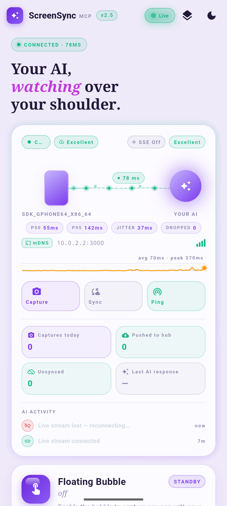
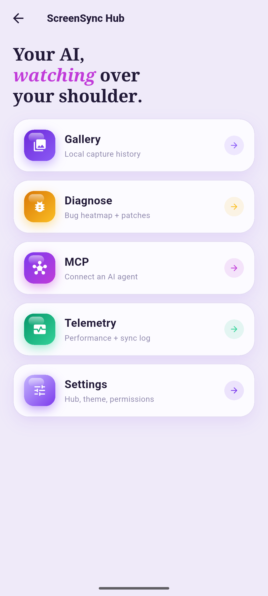
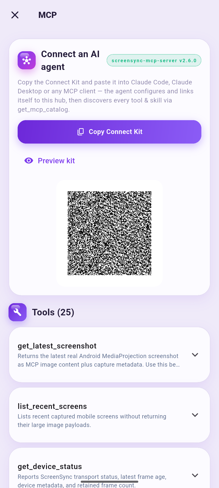
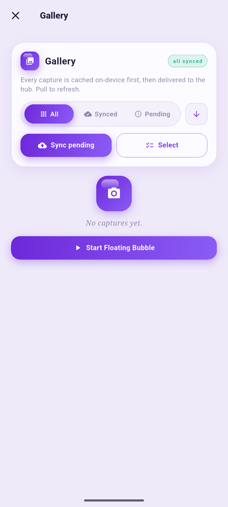
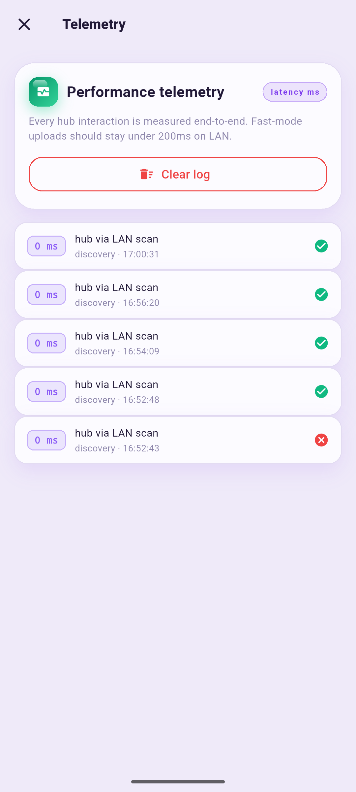
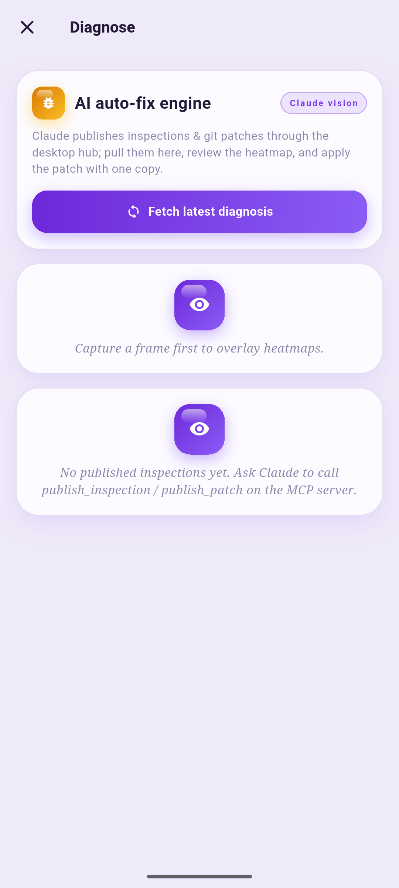
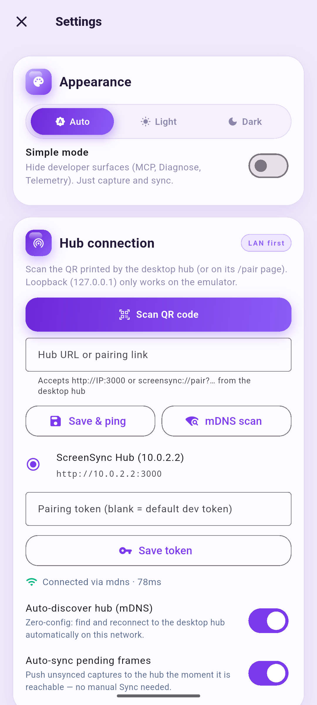

ScreenSync MCP turns your Android phone into a live window for any AI agent. Real-time screen capture, full device control, and 25+ MCP tools — all over your own LAN, with privacy built in.

Three pieces. One live loop. Your phone streams frames to a tiny hub on your computer, and your AI agent sees — and acts — through MCP.
Flutter app captures the screen via MediaProjection — floating bubble, shake-to-capture, or on demand.
A lightweight Node.js hub on your computer (port 3000). Discovered automatically via mDNS. Secured by a bearer token.
Claude, or any MCP-compatible agent, connects over stdio — sees frames, reads UI hierarchy, taps, swipes, types.
Run the hub on your computer, open the app, and pair instantly with the Connect-Kit QR code. mDNS finds the hub on your LAN — zero configuration.
Grant screen-capture permission once. The app streams frames over Server-Sent Events with live latency stats (P50/P95, jitter, drops) on the Connection Hero.
Your agent calls MCP tools: grab the latest screenshot, inspect the UI tree, tap buttons, run autonomous UI tests, reproduce bugs, audit accessibility.
A real session: the agent connects to the hub, captures the screen, reads the UI hierarchy, taps a button — then compares frames to verify it worked. All through MCP.
Built feature-by-feature from real workflows — mobile debugging, UI testing, live inspection.
A draggable overlay bubble captures any app on your phone with one tap — no switching back and forth.
Frames and events stream in real time over Server-Sent Events. Watch the AI activity timeline as tool calls happen.
The app finds your hub on the LAN automatically via Bonjour/mDNS. Wireless debugging friendly — no cables, no IP typing.
Scan a QR code to pair phone and hub instantly — token, host, and port exchanged in one secure step.
Latency sparkline, P50/P95, jitter, dropped-frame counter, sync log — full visibility into the pipeline.
Shake your phone to snap a frame hands-free — with adjustable sensitivity threshold in Settings.
Stream, Fast, and Inspect presets balance latency vs fidelity — JPEG low-latency mode included.
Off the LAN? Frames sync through your own Google Drive (Bring Your Own Storage) — hybrid mode switches automatically.
Every capture is cached in a local SQLite gallery with sync state — browse, re-push, or clear anytime.
Your agent doesn't just watch — it acts. Every tool is exposed over standard MCP stdio.
Built-in prompt: agent grabs and deeply analyzes the current phone screen.
Agent walks your app's UI by itself — tapping, asserting, and reporting.
Describe a bug in plain language — the agent reproduces it on-device with logs.
Automated a11y sweep of the live UI hierarchy: labels, contrast, touch targets.
Real screenshots from the live app — dashboard, hub, gallery, MCP catalog, telemetry & more.






…and more inside
Onboarding, QR pairing, region crop, annotate & diff tools.
Frames travel over your own Wi-Fi network with bearer-token auth. Nothing touches third-party servers unless you enable Drive fallback.
Measured P50 on LAN with the Stream preset. Health pings every 20 seconds keep the link honest.
Flutter (BLoC) app · Node.js/TypeScript hub · standard MCP stdio + HTTP/SSE. Works with any MCP-compatible client.
Every app screen is tested at ≤360dp — adaptive shell scales from small phones to tablets, light & dark themes.
╭──────────────╮ mDNS + token ╭──────────────╮
│ 📱 PHONE │ ────────────────▶ │ 🖥 MCP HUB │
│ Flutter app │ HTTP :3000 │ Node.js/TS │
│ MediaProj. │ ◀──────────────── │ SSE events │
╰──────────────╯ live frames ╰──────┬───────╯
│ MCP stdio
▼
╭──────────────╮
│ 🤖 AI AGENT │
│ 25+ tools │
│ 4 prompts │
╰──────────────╯
Set up the hub, scan the QR, and your agent is watching in under two minutes.